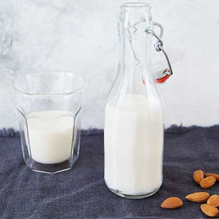

Almond milk

Ingredients
How to make :
- 1. Put the almonds in a large bowl and cover with water, then cover the bowl and leave to soak overnight or for at least 4 hrs.
- 2. The next day, drain and rinse the almonds, then tip into a blender with 750ml cold water. Whizz until smooth. Pour the mixture into a muslin-lined sieve over a jug and allow it to drip through. Stir the mixture gently with a spoon to speed up the process.
- 3. When most of the liquid has gone through into the jug, gather the sides of the muslin together and squeeze tightly with both hands to extract the last of the milk.